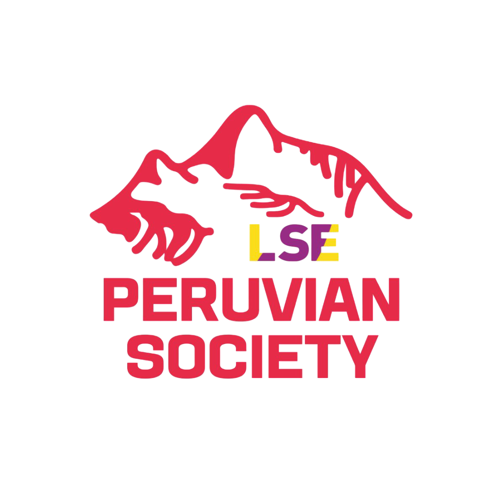

¿Pensando en postular a la LSE?
Conecta con egresados y estudiantes peruanos de la LSE que pueden
brindarte consejos sobre admisiones, becas y vida académica
Explorar directorio
Estudiantes y egresados peruanos de la LSE
Buscar por
▼
Departamento/Escuela LSE
Todos
Economics
Gender Studies
Geography and Environment
Government
International Development
Law
Management
Media and Communications
Psychological and Behavioural Science
Public Policy
Social Policy
Sociology
Programa de pregrado
Todos
Administración de Empresas
Arquitectura
Ciencia Política y Educación
Ciencia Política y Gobierno
Comunicaciones
Derecho
Diseño Industrial
Economía
Filosofía
Gestión Organizacional
Periodismo
Psicología
Sociología
Universidad de pregrado
Todos
Pontificia Universidad Católica del Perú
Universidad del Pacífico
Universidad Nacional Mayor de San Marcos
Universidad de Lima
Universidad Peruana de Ciencias Aplicadas
Universidad Nacional de Piura
Universidad Peruana Cayetano Heredia
Pratt Institute
NYU Abu Dhabi
University of Bath
Región
Todos
Arequipa
Ayacucho
Cusco
Junín
Lambayeque
Lima Metropolitana
Piura
Tumbes
Tipo de Financiamiento
Todos
Beca Generación del Bicentenario
Chevening Scholarship
LSE Peruvian Scholarship for Public Service
LSE Scholarship
AKO Foundation
Programa Reto Excelencia - SERVIR
Autofinanciado
Crédito/préstamo